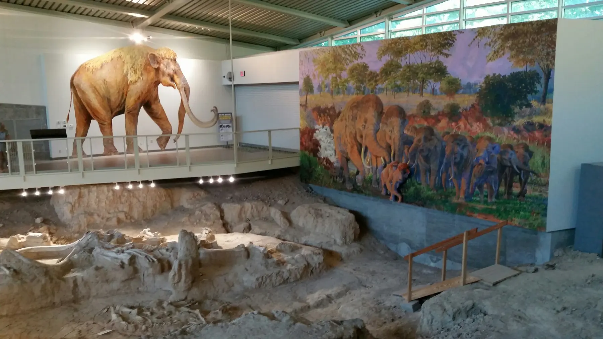
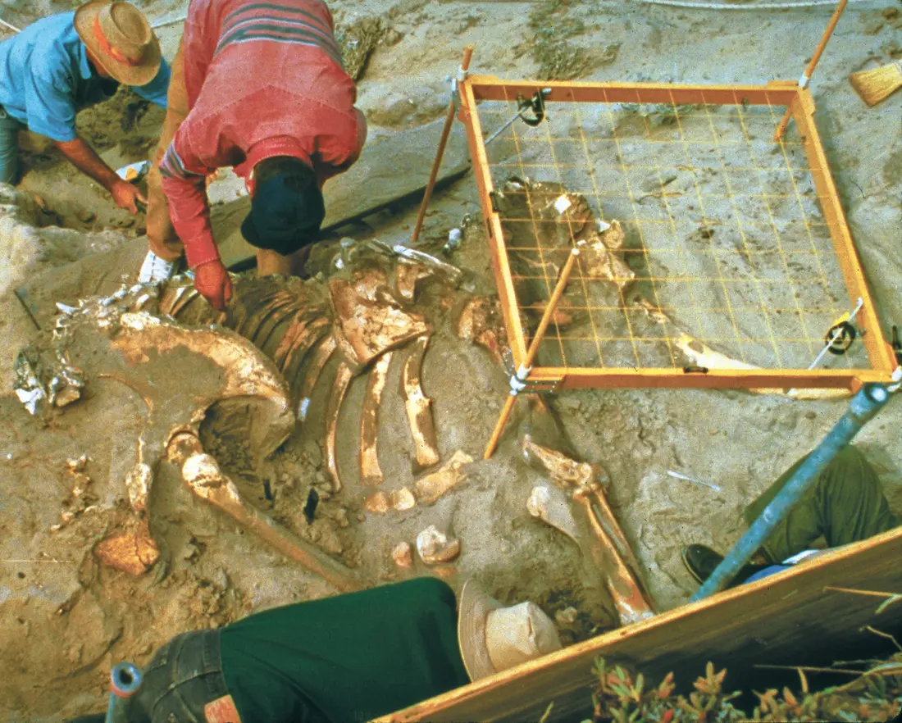
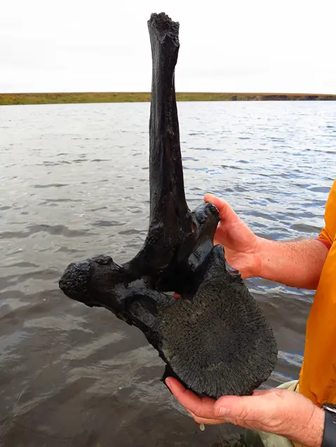
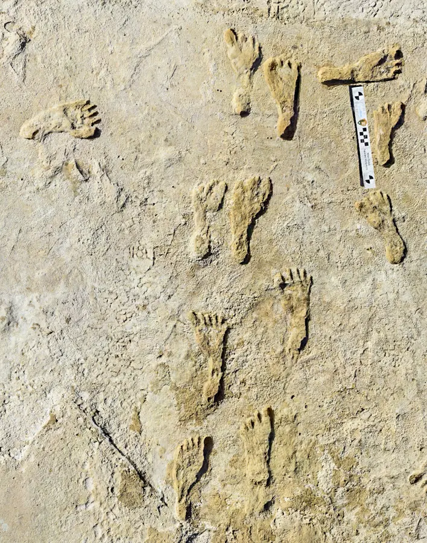

“Ice Age” is shorthand
The Pleistocene included repeated colder glacial intervals and warmer interglacial intervals. Ice did not cover the whole planet.
Quaternary field file · Grades 6–10
The Pleistocene was not one endless winter. Ice sheets advanced and retreated, seas fell and rose, habitats shifted, and humans lived beside enormous mammals. Read the traces they left behind.

Before you investigate
The Pleistocene included repeated colder glacial intervals and warmer interglacial intervals. Ice did not cover the whole planet.
A proxy is an indirect clue. Ice bubbles, pollen, ocean sediment, landforms, fossils, and chemical ratios preserve different pieces of the past.
Scientists compare independent records, dates, and locations. Agreement between several kinds of evidence makes an explanation stronger.
Public-domain field plates
These are real sites and specimens—not reconstructions. Notice how scale bars, excavation grids, surrounding sediment, and location records turn an object into scientific evidence.



Interactive investigation 1
Move between dated horizons. Each stop is a selected event—not a claim that conditions were identical everywhere.
Use the arrow keys or drag. Seven evidence stops span the epoch.
The formal boundary sits at 2.58 million years ago. Large Northern Hemisphere ice sheets had begun expanding as Earth entered a new pattern of glaciation.
Interactive investigation 2
Earth’s orbit changes in several overlapping rhythms. Together they alter where and when sunlight arrives, helping pace glacial cycles.
All three orbital rhythms are shown.
Life in a variable world
The mammoth steppe was one Pleistocene ecosystem, not the whole world. Forests, grasslands, wetlands, deserts, tundra, and ice margins shifted as climate changed.
Cold-adapted hair, fat, small ears, and specialized teeth suited open northern environments. Mammoths were one branch of the elephant family—not ancestors of living elephants.
Several lineages ranged from modest to enormous. Their fossils, dung, and cave remains reveal diets and habitats that changed across regions.
The epoch includes Homo erectus, Neanderthals, Denisovans, Homo sapiens, and others. Different populations made tools, used fire, moved, cooperated, and adjusted to changing habitats.
Case site · Beringia
When glaciers stored more of Earth’s water on land, global sea level fell and exposed land between Siberia and Alaska. Beringia was often a broad, dry region—not a narrow bridge surrounded by ice—and animals moved in both directions at different times.
Near the end of the Pleistocene, many megafaunal species became extinct. Timing and causes differed among continents and species.
Interactive investigation 3
Test the claim: “This valley was cooler and wetter during part of the late Pleistocene than it is today.”
A strong case needs evidence connected to the place, time, and environment in the claim.
Field check
Exit ticket
Name two kinds of Pleistocene evidence and state what each can reveal.
Why is “the Ice Age” a useful phrase but an incomplete scientific description?
Use at least two clues to defend a claim about a past environment. Include one limit or uncertainty.
Source shelf
Photographs are locally hosted, public-domain National Park Service images with visible captions; full provenance is recorded in the image directory’s attribution file. Lesson diagrams and the orbital signal mixer are original explanatory graphics. Dates follow the current ICS chart; the trace is deliberately schematic.